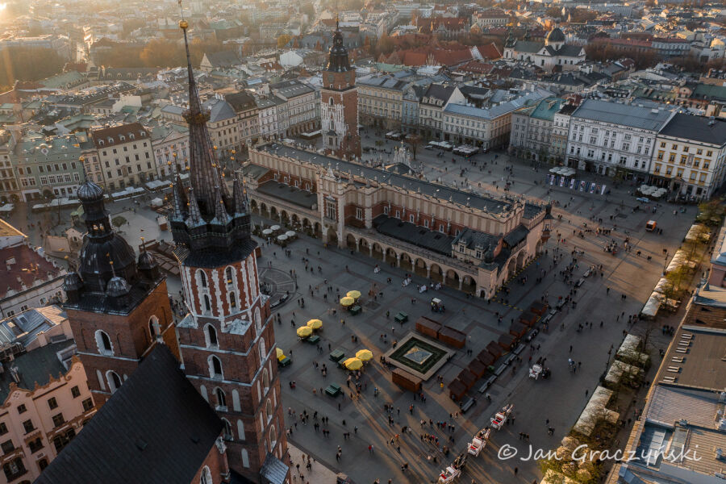

Kraków
Połączenia dziennie: 1
Linia: 4
Godzina odjazdu z Poznania: 8:00
Cena: 50 PLN
Informacje o mieście:
Kraków – miasto na prawach powiatu położone w południowej Polsce nad Wisłą, drugie co do liczby mieszkańców i powierzchni miasto kraju. Formalna stolica Polski do 1795 roku i miasto koronacyjne oraz nekropolia królów Polski. Od 1000 roku nieprzerwanie stolica diecezji krakowskiej (jednej z pięciu w ówczesnej Polsce), a od 1925 archidiecezji i metropolii. Lokowany przed 1228 rokiem, ponownie w 1257 roku. Od odzyskania niepodległości w 1918 r. miasto wojewódzkie (od 1999 r. siedziba władz województwa małopolskiego), jest także centralnym ośrodkiem metropolitalnym aglomeracji krakowskiej i Krakowskiego Obszaru Metropolitalnego. Kraków jest stolicą historycznej Małopolski. Leży na obszarze Bramy Krakowskiej, Niecki Nidziańskiej i Pogórza Zachodniobeskidzkiego.
